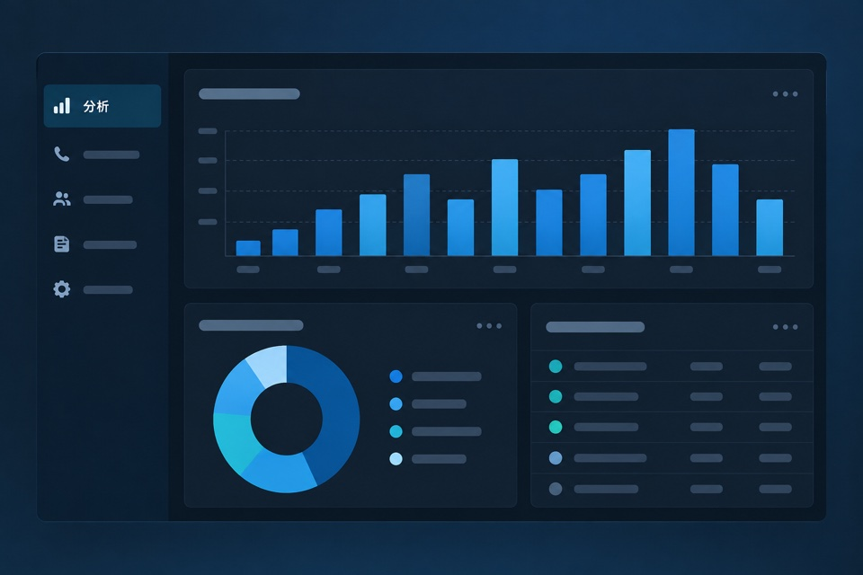
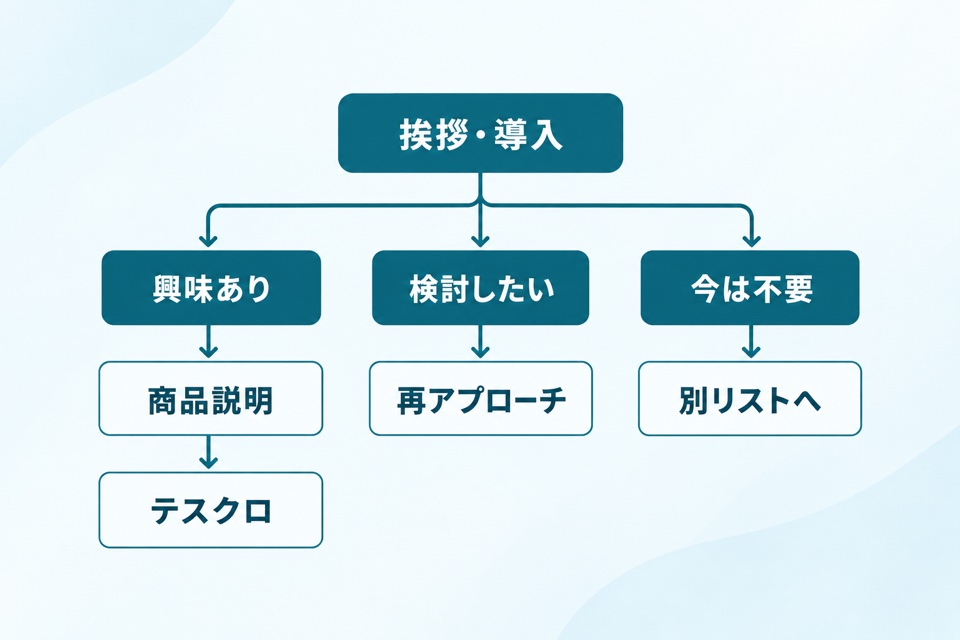

人による営業
営業担当１人
１人あたり
約 40万円／月
月間コール数4,400コール
１時間
約25コール
１日（8時間）
約200コール
月間（22日稼働）
約4,400コール
設計したトークツリーで、どんな会話をしているのかをご確認いただけます。

※設計したトークツリーをもとにした、実際の受注コールの一部です。
営業代行とは、貴社の代わりに新規開拓の営業活動を行うサービスです。経営者のミカタは、トークツリーの設計から月22,000コールの実行までを行います。人の営業（200コール/日×22日＝約4,400コール）と比べて、約5倍の営業機会です。
営業のプロが、商材とターゲットに合わせて会話の流れを設計します。
設計したトークで、24時間自動架電を行います。
相手の反応から興味度を判定し、見込みのある先に集中します。
全通話の録音とコール一覧を共有。何を話したかが見えます。
無駄な工程を省き、最短の導線で商談の場をつくります。
同じ予算でも、かけられる電話の数がまったく違います。しかも、辞めない。飽きない。ブレない。教育も不要です。
１人あたり
約 40万円／月
１時間
約25コール
１日（8時間）
約200コール
月間（22日稼働）
約4,400コール
月額（税別）
35万円／月
24時間
自動架電
全通話の
録音・ログ
データをもとに
改善し続けられる
※人による営業の費用・コール数は、営業担当者１人・１日８時間・月22日稼働を想定した比較例です。
※経営者のミカタの月額費用（35万円・税別）には通信費が含まれています。
EMOTIONAL RISK
どんなに優秀でも、人間には感情がある。それが最大のリスクです。
予告なしの退職 / 採用・教育コストが無駄に
営業代行を使ったことがある方なら、どれか1つは心当たりがあるはずです。経営者のミカタは、これらが起きないように設計しました。

「半年払ってもアポは片手で数えるほど。解約しても請求書だけ届き続けた。」

「月1回のサマリーPDFだけ。何を話したのか、まったく見えない。」

「あとから録音を聞いて愕然。粘る強引なトークを、うちの名前でしていた。」

「AI営業を使ってみたら、つくったのは営業を知らないエンジニアだった。」
01 / 04
契約、見える化、トークの品質、営業の知見。経営者のミカタは、よくある失敗の原因を最初から設計に組み込んでいます。
契約は6ヶ月、以後は6ヶ月ごとの自動更新。PDCAを回すのに必要な期間で区切る設計です。
6ヶ月契約・
自動更新。

全通話の録音とコール一覧を開示します。誰に何を話したのかを、すぐに確認できます。
全ログ開示で、
すべて見える。
営業のプロがスクリプトを設計し、録音をもとに品質を管理します。強引なトークをさせない設計です。
プロの設計で、
ブランドを守る。

営業の現場を知るプロが、トークツリーの設計から改善までを担当します。
現場を知る人が
設計する。
経営者のミカタは、かけっぱなしにしません。
全コールログを共有し、データと音声をもとにトークとリストを改善し続けます。
設計したトークで
自動架電
架電結果を
リアルタイムで共有
全通話の録音を
聞いて、現状を把握
データと音声から
課題を特定
トークツリーと
リストを最適化
このサイクルを、データにもとづいて繰り返します。
トーク設計からコールの実行、録音・ログの共有まで、月額費用に含まれています。
トーク設計・シナリオ構築
初期設定・環境構築
月間 22,000 コール
初期費用のあとは、月額費用のみでご利用いただけます。
月間22,000コール。未消化分は翌月へ繰り越せます。
採用・教育は不要。担当者の離職に左右されません。
録音・ログを共有し、データをもとに改善します。
ご納得いただけた場合のみ、ご契約へ進みます。
現状の営業体制や課題をヒアリングし、合うかどうかを正直にお伝えします。
ターゲットリスト・スクリプト・KPIを設計してご提案します。
設計したトークツリーで、月間22,000コールを実行します。
コールログを共有し、データをもとにスクリプトやリストを改善し続けます。
当月に使用されなかったコール数は、翌月に繰り越されます。
例 当月12,000コール使用の場合
A. 月額費用に月間22,000コールが含まれています。人の営業（200コール/日×22日＝約4,400コール）と比べて約5倍の営業機会です。コール数は随時共有するため、進捗をいつでも確認できます。当月に使われなかったコールは翌月へ繰り越されます。
A. BtoB商材を中心に、業種を問わずご相談いただけます。初回ヒアリングで、商材とターゲットに合わせたアプローチを設計します。
A. 営業のプロが、貴社の商材・ターゲットに合わせてトークツリーを設計します。無駄のない会話構成に、トップ営業の間・語尾・テンションを組み合わせた設計です。運用開始後は、通話データをもとに継続して改善します。
A. 初期契約は6ヶ月間です。以降は6ヶ月ごとの自動更新となります。成果を出すにはPDCAを回す期間が必要なため、この設計にしています。
A. 初期費用は200,000円（税別）です。トーク設計・シナリオ構築・初期設定・環境構築を含みます。以降は月額費用350,000円（税別）のみで、追加費用はかかりません。
A. 営業担当者1人（1日8時間・月22日稼働）の場合、費用は約40万円/月、コール数は約4,400コール/月が目安です。経営者のミカタは月額35万円（税別）で月間22,000コール。約5倍の営業機会があり、採用・教育・離職の負担もありません。
A. 業種やターゲットによって異なります。月間22,000コールの実行量があるため、短い期間でデータが集まり、PDCAを回しやすい設計です。
A. はい、変更できます。コールデータの分析結果をもとに、トークツリーやターゲットリストの見直しをご提案します。追加費用はかかりません。

私は、ずっと営業をやってきました。
25歳で光通信に入社し、個人営業・責任者・統轄部長として、数多くの営業現場を経験。
独立後も、今なお自社でコールセンターを運営し、法人営業の最前線に立っています。
1,500件
電子電話帳営業フレッツ光
2,000件
アライアンス営業フレッツ光
1,500件
CRM営業U-NEXT
2,000件
CRM営業WiMAX
現在も、自社でコールセンターを運営し、
法人営業を現場で行っています。
| 運営会社 | 株式会社Bright |
|---|---|
| サービス | 営業×AI×BPOサービス「経営者のミカタ」 |
| お問い合わせ | お問い合わせフォームへ → |
資料請求・無料相談のお申し込みはこちらから。
無料相談では、現状の営業コストと比べた削減インパクトを正直にお伝えします。合わなければ、それでOKです。